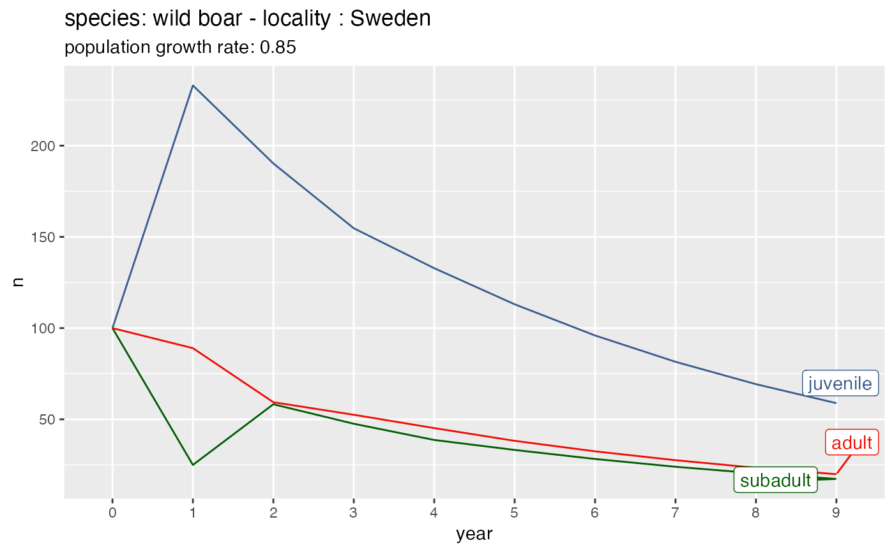

Function to calculate the evolution of a population given a dataframe with population dynamic parameters for different locations and species.
get_pop_evol(df, species, locality, n = 100, years = 10, colours = "#000000")A dataframe with population dynamic parameters. It must contain (at least) the following columns:
locality: locations.
species: species identifier. Typically a vernacular or scientific
name.
lifestage
reproduction: probability to reproduce within a year. Real number
equal or above 0.
survival: probability to survive within a year. Real number between 0
(the animal dies for sure) and 1 (the animal survives for sure).
Character with the species name. One of the species in column
species of df.
Character with the locality name. One of the localities in
column locality of df.
Number of individuals per life stage class. Default: 100 individuals for each class.
Number of years for the prediction. Default: 10 years.
Vector with hex colour codes, one per life stage. If one
value is passed, all life stage categories have same color in the returned
line plot. Default: black ("#000000") for all life stages.
A ggplot2 line plot with years on the x-axis (year), number of
animals on the y-axis (n) and the life stage classes as colour and label.
The lambda value (population growth rate) is shown in the subtitle. If no
data are left in df for the given combination species/location,
NULL is returned. Vector with colors is recycled if less colours than
life stage classes are used.
library(fisrutils)
# deafult color and initial number of individuals
get_pop_evol(pop_dyn, species = "wild boar", locality = "Flanders")
#> Same color for all life stage classes: #000000.
# Use a not default color
get_pop_evol(
pop_dyn,
species = "deer",
locality = "Wallonia",
colour = "#005c01"
)
#> Same color for all life stage classes: #005c01.
# Use as many colours as life stage classes
colours_vec <- c("#3a5c8e", "#005c01", "#f00c02")
get_pop_evol(
pop_dyn,
species = "wild boar",
locality = "Sweden",
colours = colours_vec
)

# Use a not default initial number of individuals
get_pop_evol(pop_dyn, species = "deer", locality = "Wallonia", n = 40)
#> Same color for all life stage classes: #000000.